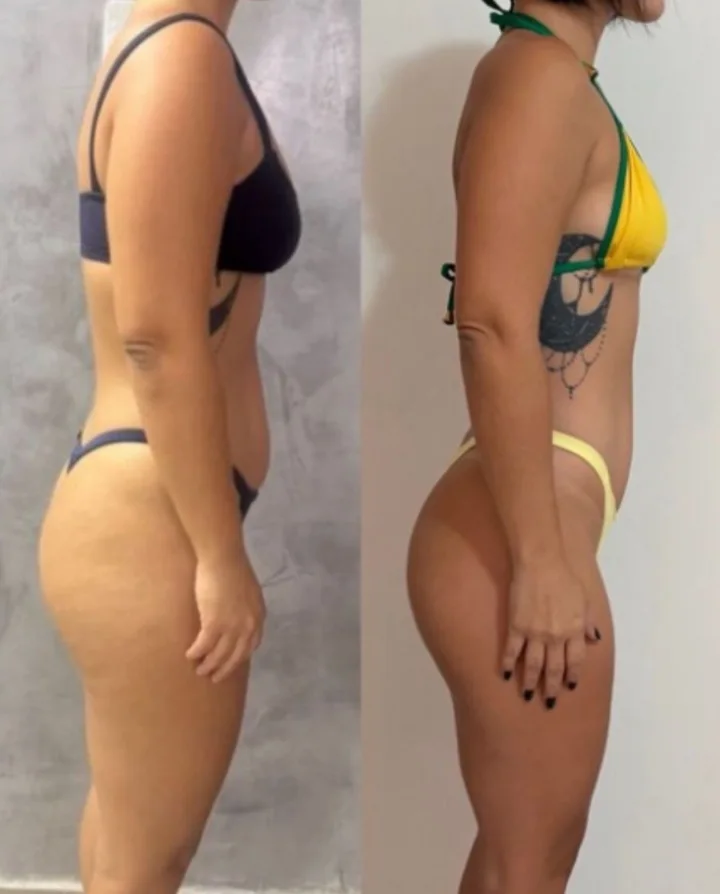
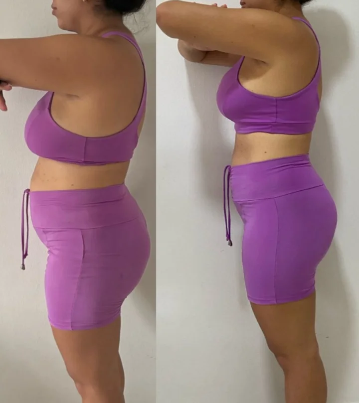
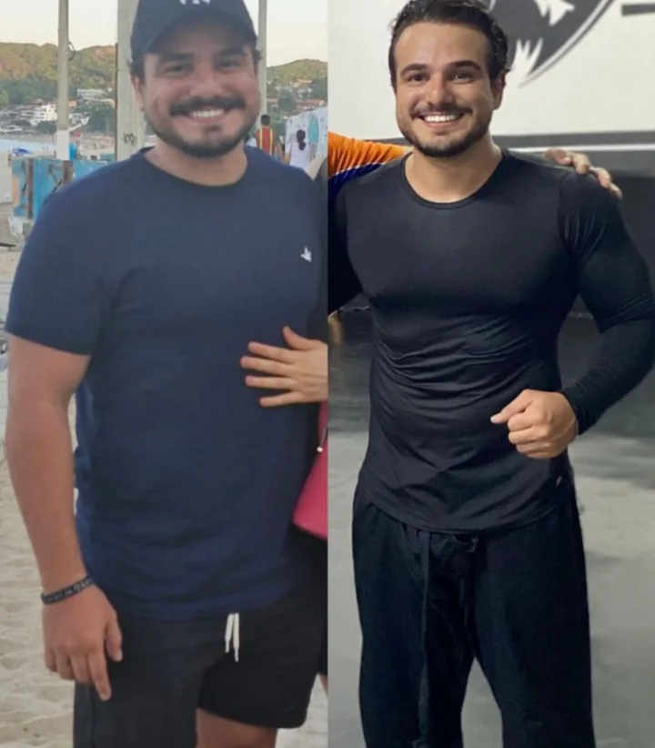

Clareza
Você abre o app e já sabe o que comer hoje. A decisão está tomada antes de você chegar cansada nela.
Entre no Clube Régia Real e descubra como "ter um plano que cabe na sua rotina para emagrecer de verdade": o segredo para eliminar até 12 kg em apenas 3 meses.
Começa toda segunda e desiste na quarta, sem saber por que a motivação sumiu de novo.
Já tentou de tudo, de dieta de internet a caneta emagrecedora, e sempre volta pro mesmo peso.
A rotina vira do avesso e não tem ninguém por perto pra dizer "eu também, continua".
Decide tudo sozinha: o que comprar, o que cozinhar, e o cansaço chega antes do jantar.
Sabe que precisa de acompanhamento, mas consulta particular custa caro e cabe em pouca gente.
A maioria das dietas e métodos ignora completamente a fisiologia feminina.
90% das dietas foram desenvolvidas com base em estudos feitos em homens
Hormônios masculinos são estáveis, enquanto os femininos mudam diariamente e drasticamente com a idade
Métodos como jejum prolongado e low-carb extremo podem destruir seus hormônios femininos
Contar calorias ignora que seu corpo processa alimentos diferentemente dependendo do seu estado hormonal
Você abre o app e já sabe o que comer hoje. A decisão está tomada antes de você chegar cansada nela.
Um grupo de mulheres na mesma fase, no WhatsApp que você já usa. Ninguém atravessa a quarta-feira sozinha.
Nutricionista de verdade acompanhando em dia útil. Não é só uma pasta de vídeos gravados.
O que a gente reconhece aqui é você ter aparecido. Não é a balança.
1 ano de acesso. 2 pilares. Resultados que ficam.
Tudo montado pra sua rotina, sem achismo.
Ninguém atravessa a semana sozinha.
Fotos enviadas pelas próprias participantes. Cada corpo responde de um jeito.



Montado a partir das suas informações e da sua rotina de verdade.
Com comida de mercado normal e a lista de compras já pronta.
Pensados pra rotina apertada, não pra quem tem duas horas livres.
Plano, cardápios e treinos num lugar só, sempre à mão.
Mulheres na mesma fase, no app que você já abre cem vezes por dia.
Ao vivo toda semana, com acervo de aulas gravadas pra rever quando quiser.
Eu não sou a nutricionista que entrega um cardápio e desaparece até a próxima consulta. A frase que eu mais ouço aqui é "eu já tentei de tudo": de outros profissionais a dieta de internet e caneta emagrecedora, perdendo e recuperando sempre o mesmo peso.
Sou nutricionista de saúde integrativa. Na prática, eu te analiso de ponta a ponta: exames, sono, rotina, treino, o que você ama comer e o que não come de jeito nenhum. E monto um plano cheio de substituição, porque ninguém precisa passar fome para emagrecer.
Montei a Régia Real com uma equipe de nutrição, educação física e medicina, atendendo presencialmente em Natal e online. O Clube nasceu daí: aqui eu estou no grupo. Você escreve numa terça à noite e, no dia útil seguinte, tem resposta de quem entende.
Plano alimentar montado pra sua rotina, cardápio semanal, treinos, app exclusivo e um grupo de mulheres no WhatsApp. Tudo com acompanhamento da equipe em dia útil.